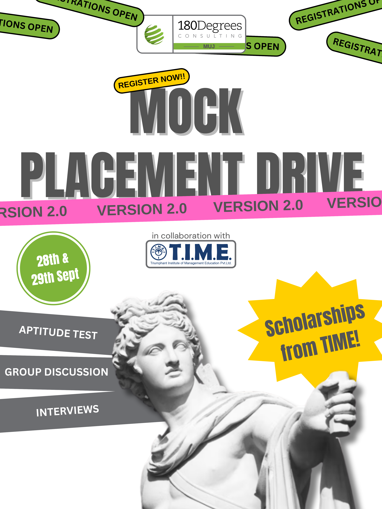

The Design Files
Every good web has a pattern behind it — a structure that holds weight before anyone sees the shape. This is the visual side of that: brand systems, apparel, and campaign work spun for 180 Degrees Consulting.

180DC Polo — Front
The front panel had to carry brand weight without shouting — a single anchor point (the 180Degrees mark) up top, and the line "Empower. Innovate. Impact." woven in low, like a signature rather than a slogan. Restraint was the whole brief here: one placement, one hierarchy, nothing competing for attention.

Crossword Back Print
This one's the centerpiece of the set — instead of just printing "180DC," the letters are hidden inside an actual crossword grid, picked out in green like they've been solved. It's the kind of detail that rewards a second look: from a distance it reads as texture, up close it reads as a puzzle with the brand as the answer.

180DC Varsity Jacket
A step outside the standard polo format — black and white varsity styling, full 180Degrees lockup on the back alongside the Manipal University Jaipur chapter tag. Built for leadership and core team, so it needed to read as a step up in visual weight without breaking from the rest of the merch line.

Mock Placement Drive 2.0
Designed for a 180DC event teaching students how to actually navigate campus placements — aptitude tests, group discussions, interviews — run in collaboration with T.I.M.E. through Manipal University Jaipur's real placement cell, so students got a genuine dry run before the real thing. The poster needed to carry a lot at once: two dates, a sponsor lockup, a scholarship hook, and the "Version 2.0" callback to the first edition — without losing legibility.
This is the one piece I have to show, but it's one of several campaign and event materials from my time at 180DC — the poster's the visible layer of a run that also covered registration flow, on-ground logistics, and coordination with T.I.M.E.